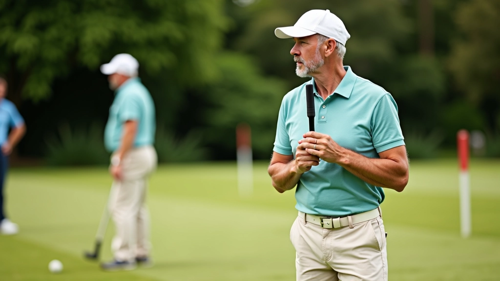
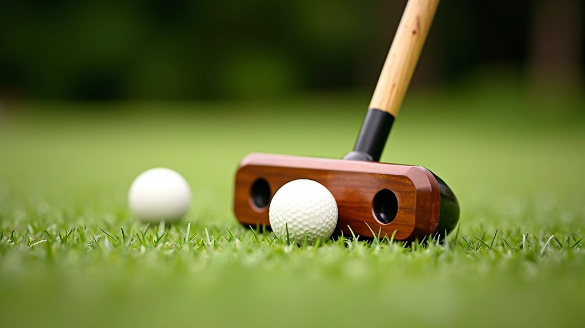
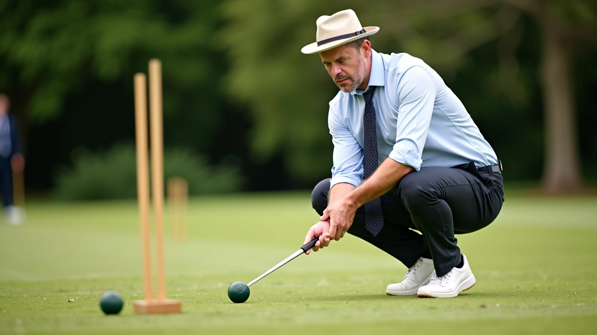

أساسيات ضربة الانقسام للمبتدئين
دليل شامل يغطي الخطوات الأساسية لإتقان ضربة الانقسام وتحسين دقتك في اللعب...
تعرف على الاستراتيجيات التي يستخدمها اللاعبون المحترفون لتحسين مستواك

الفرق بين اللاعب العادي والمحترف ليس فقط في المهارة الأساسية، بل في كيفية اتخاذ القرارات الاستراتيجية خلال المباراة. نحن نعرّفك على التقنيات والاستراتيجيات التي تُحدث فارقاً حقيقياً.
عندما تبدأ في فهم الإيقاع الكامل للعبة — كيفية قراءة الملعب، والتنبؤ بحركات الخصم، وتخطيط ضرباتك قبل وقوعها — ستشعر بتحول حقيقي في أدائك. هذا هو السر الذي يفصل بين من يلعب بشغف ومن يلعب بذكاء.
فهم نفسية اللعبة والتحكم في تركيزك
رؤية عدة خطوات للأمام وتنفيذها بدقة
إتقان الضربات الصعبة تحت الضغط
واحدة من أهم المهارات التي تميز اللاعبين المحترفين هي القدرة على قراءة الملعب بشكل صحيح. ليس الأمر فقط عن معرفة أين توجد الكرة، بل فهم الزوايا والمسافات وكيفية استخدام تضاريس الملعب لصالحك.
تذكر أن كل حركة لديك تؤثر على حركة الخصم التالية. عندما تضع كرتك في موضع معين، أنت لا تفكر فقط في الضربة الحالية، بل تخطط لثلاث أو أربع ضربات قادمة. هذا هو التفكير الاستراتيجي الحقيقي.


لا تكتفِ بالضربات الأساسية. المحترفون يعرفون كيفية تنويع أسلوبهم حسب الموقف. هناك ضربات قوية للمسافات البعيدة، وضربات دقيقة للمسافات القريبة، وضربات معقدة تتطلب تدويراً محسوباً للكرة.
المفتاح هنا هو الممارسة المنهجية. لا تمارس الضربات عشوائياً — لديك برنامج محدد. تمارس كل نوع من الضربات من زوايا مختلفة وعلى مسافات متنوعة. بعد أسابيع من هذا التدريب المركز، ستصبح الحركات الصحيحة عفوية تماماً تحت الضغط.
للمسافات القريبة جداً. تتطلب تحكماً دقيقاً وثقة عالية.
للتحكم في اتجاه الكرة بدقة. أساسية لتحقيق الأقواس.
ضربة متقدمة تتطلب حساب القوة والدوران معاً.

فريق التحرير والمحتوى
كتبه فريق ملعب الروكيه التحريري، متخصص في تقديم إرشادات عملية وموثوقة عن إتقان تقنيات الكروكيه.
دليل شامل يغطي الخطوات الأساسية لإتقان ضربة الانقسام وتحسين دقتك في اللعب...

اكتشف كيفية تنفيذ ضربة الروكيه بشكل صحيح وزيادة فرصك في الفوز بالنقاط...

برنامج تدريبي عملي يساعدك على تطوير مهاراتك من خلال تمارين يومية...
اللعبة تحت الضغط مختلفة تماماً. يمكنك أن تمارس الضربات بشكل مثالي في التدريب، لكن عندما تواجه منافساً قوياً في مباراة حقيقية، قد ينهار تركيزك. المحترفون يدركون هذا جيداً ويتدربون عليه.
يستخدم اللاعبون المتقدمون تقنيات تنفس محددة وروتينات نفسية قبل كل ضربة مهمة. قد تستغرق هذه الروتينات بضع ثوان فقط — خذ نفساً عميقاً، ركز على الهدف، اشعر بحركتك — لكنها تحدث فارقاً كبيراً في النتيجة النهائية.
"الفرق بين الفوز والخسارة ليس في المهارة وحدها، بل في كيفية إدارتك لعقلك عندما تكون الأوضاع صعبة."
حكمة من لاعبي الكروكيه المحترفين

هذا المقال يقدم إرشادات تعليمية بناءً على أفضل الممارسات والتقنيات المعروفة في لعبة الكروكيه. النتائج قد تختلف بناءً على مستوى خبرتك وممارستك. نشجعك على البدء بالأساسيات وتطوير مهاراتك تدريجياً. كل لاعب له رحلة فريدة، والتقدم يتطلب الصبر والمثابرة.
الوصول إلى مستوى الاحترافية في الكروكيه ليس حلماً بعيد المنال. إنه يتطلب فهماً عميقاً للاستراتيجية، ممارسة منظمة، وقدرة على التعلم من الأخطاء. نحن قدمنا لك الأساسيات — الآن دورك أن تأخذ هذه المعرفة وتطبقها على الملعب.
ابدأ بركز على عنصر واحد في كل مرة. أتقن قراءة الملعب، ثم طور ضرباتك، ثم اعمل على إدارة ضغطك النفسي. بعد بضعة أسابيع من التدريب المركز، ستلاحظ تحسناً حقيقياً. ثم، تابع مقالاتنا الأخرى لاستكشاف جوانب أكثر تقدماً من اللعبة.
لدينا مجموعة كاملة من الأدلة والتدريبات العملية لمساعدتك على تطوير مهاراتك
استكشف جميع المقالات